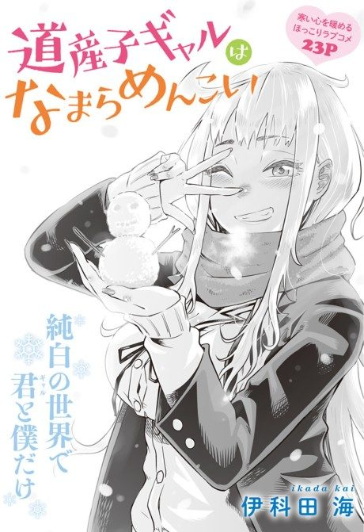

Hokkaido Gals Are Super Adorable!
道産子ギャルはなまらめんこい
After the anime, read the manga from Chapter 33.
7.0AniList score
—Animeter, no votes yet
12episodes
Rate it or report where you stopped
Anime finished. Where does the manga pick up?
Start at Chapter33
Season 1 adapts up to chapter 32, so start at chapter 33 (volume 4). The manga is finished, ending in September 2024.
132ongoing
Season 1Start reading here